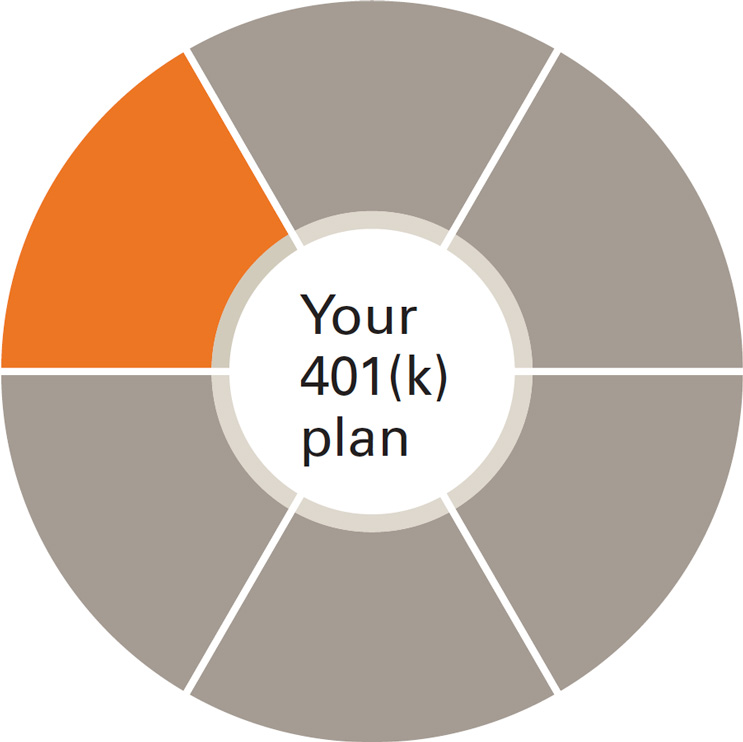

---
---
<div class="vanguard-plan vanguard-plan--partcipant">
  <section class="vanguard-mar-b-more">
    <div class="vanguard-headline-container vanguard-mar-b">
      
      <h2>Investment flexibility</h2>
    </div>
    <h1>Guidance at every stage for your employees</h1>
    <p>You’ll be able to select investments for your plan that include Vanguard index and active funds, Target Retirement Funds, exchange-traded funds (ETFs), and more than 12,000 non-Vanguard funds. Additional options include company stock and self-directed brokerage accounts.</p>
    <p>Guidance from your financial professional can get your plan started on the right track and help you create a fund lineup that meets the needs of your participants. Additionally, your financial professional may construct model portfolios at no cost.</p>
    <p class="vanguard-mar-b-none">Use these investment options to construct your lineup:</p>
    <ul>
      <li>Vanguard Target Retirement Funds</li>
      <li>Vanguard index funds</li>
      <li>Vanguard money market funds</li>
      <li>Vanguard active funds</li>
      <li>Vanguard ETFs®</li>
      <li>More than 12,000 non-Vanguard funds</li>
      <li>Stable value funds</li>
      <li>Company stock</li>
      <li>Self-directed brokerage through TD Ameritrade</li>
    </ul>
  </section>
  <ul class="vanguard-footnote-list">
    <li class="vanguard-footnote--item">Investments in Target Retirement Funds are subject to the risks of their underlying funds. The year in the fund name refers to the approximate year (the target date) when an investor in the fund would retire and leave the workforce. The fund will gradually shift its emphasis from more aggressive investments to more conservative ones based on its target date. An investment in the Target Retirement Fund is not guaranteed at any time, including on or after the target date.</li>
  </ul>
</div>